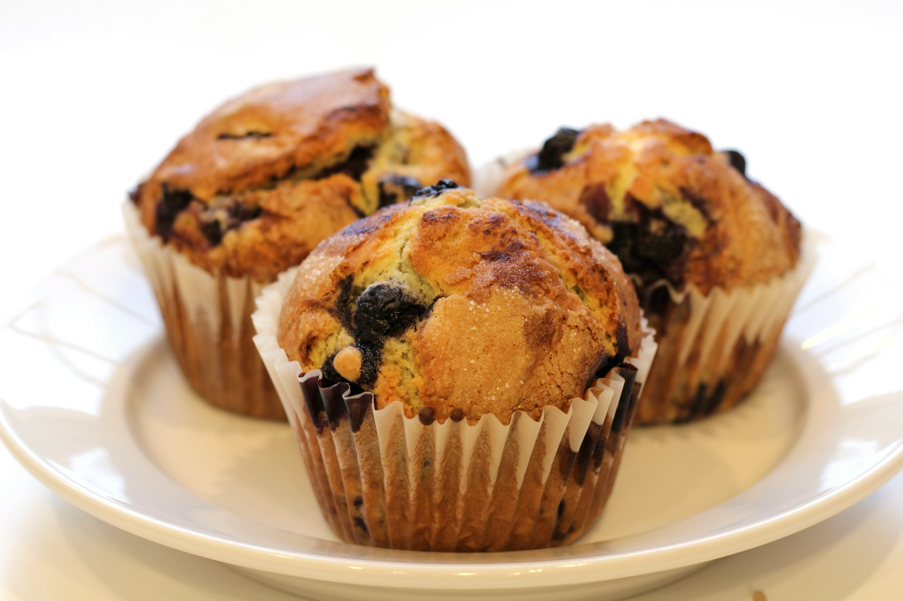

Blueberry Muffins
- Strawberry Yogurt Cake
- Blueberry Muffins
- Chocolate Chip Cookies
- 225g flour
- 75g sugar
- 2 teaspoon baking powder
- 1/2 teaspoon salt
- 30g butter, melted
- 1 egg
- 200ml milk
- 1 teaspoon vanilla essence
- 1 cup fresh blueberries
Method:
- Preheat oven to 200 degC.
- In a large bowl, stir together flour, sugar, baking powder and salt.
- In another bowl, whisk the egg, then add in the milk and butter. Mix well.
- Add the wet ingredients to the flour mixture and stir until just incorporated. Do not over mix.
- Fold in the blueberries. Spoon the batter into muffin cups/liners and bake for 20 to 25mins, or until risen and lightly browned.
